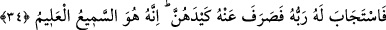

delil bulunmaktadır.
34. Rabbi onun duasını kabul etti ve onların hîlelerini ondan uzaklaştırdı. Çünkü
O çok iyi işiten, pek iyi bilendir.
“Rabbi onun” ‘eğer onların hîlesini benden çevirmezsen...’ niyazını da ihtivâ eden
“duâsını kabul etti” Çünkü bu sözde, Allah’tan bu kadınların hîlelerini kendisinden
uzaklaştırması isteği mevcuddur “ve onların hîlelerini ondan uzaklaştırdı.” Nefsini
ismet ve iffet üzere sabit-kadem kıldı. Öyle ki zindana ve onun zorluklarına göğüs
germeye razı oldu. Zindanı içinde masiyet olan lezzetlere tercih etti.
“Çünkü O” kendisine yalvarıp yakaranların duâsını “çok iyi işiten” onların
durumlarını ve bu durumlara en uygun çarelerin neler olduğunu “pek iyi bilendir.”
Şeyh Ebû Bekr Dakkâk’ın şöyle dediği nakledilir: Mekke’de yirmi sene kaldım. Bu
zaman zarfında süte karşı müthiş bir istek duyuyordum. Sonunda nefsim bana galip geldi
ve Mekke’ye iki konaklık bir mesafede bulunan Usfan’a giderek bir Arap oymağından
beni misafir etmelerini istedim. Bu arada gözüm güzel bir kıza ilişti. Gönlümü
kendisine esir eden bu kız bana şöyle dedi:
“Ey Şeyh! Eğer bana duyduğun bu sevgi doğruysa sende süte karşı hiçbir arzu
kalmamış olmalıdır.”
Kızın bu sözü üzerine Mekke’ye döndüm ve Beytullah’ı tavaf ettim. O gece rüyamda
Yûsuf-i Sıddık (a.s.)’ı gördüm. Kendisine:
“Ey Allah’ın nebîsi, Züleyhâ’dan kurtulduğun için gözün aydın!” deyince bana şöyle
cevap verdi:
“Ey mübârek, asıl o Usfanlı kızdan kurtulduğun için senin gözün aydın!” Ardından
Yûsuf (a.s.): “Rabbinin huzurunda durmaktan korkan kimselere iki cennet vardır.”
(er-Rahman, 55/46) âyetini okudu. Şâir der ki:
Bakışlarını kalbine delil yaparsan bir gün,
Yoracaktır, elbet seni gördüklerin.
Gördüklerinin hepsini elde edemezsin
Azına da sabredemezsin.
Bâzıları şöyle der: “Nefisten yine nefis ile kurtulmak mümkün değildir. Nefisten
kurtuluş ancak Allah ile mümkün olabilir.”
Şeyh Ebû Türab Nahşebî ise şöyle der: “Kim Allah’tan Allah ile meşgul olarak uzak
kalırsa, ilahi buğz onu anında yakalar. Allah’ın özel koruması (ismeti) kadar hiçbir şey
insanı koruyamaz.”